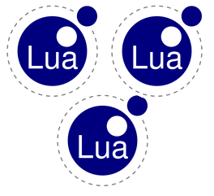

|  |
Lua Lanes - multithreading in Lua |
Copyright © 2007-08 Asko Kauppi. All rights reserved.
Lua Lanes is published under the same MIT license as Lua 5.1.
This document was revised on 25-Jul-08, and applies to version 2008.
Lua Lanes is a Lua extension library providing the possibility to run multiple Lua states in parallel. It is intended to be used for optimizing performance on multicore CPU's and to study ways to make Lua programs naturally parallel to begin with.
Lanes is included into your software by the regular require "lanes" method. No C side programming is needed; all APIs are Lua side, and most existing extension modules should work seamlessly together with the multiple lanes.1
See comparison of Lua Lanes with other Lua multithreading solutions.
Lua Lanes supports the following operating systems:
The underlying threading code can be compiled either towards Win32 API or Pthreads. Unfortunately, thread prioritation under Pthreads is a JOKE, requiring OS specific tweaks and guessing undocumented behaviour. Other features should be portable to any modern platform.
If you wish more platform support, please sign up as a test resource (BSD, Linux x64, QNX, Solaris, Win64, ...).
Lua Lanes is intended to be installed via Lua Rocks package management.
> luarocks search lanes
... output listing Lua Lanes is there ...
> luarocks install lanes
... output ...
To compile from source, run make and make test (also on Windows).
The following sample shows preparing a function for parallel calling, and calling it with varying arguments. Each of the two results is calculated in a separate OS thread, parallel to the calling one. Reading the results automatically joins the threads, waiting for any results not already there.
require "lanes" f= lanes.gen( function(n) return 2*n end ) a= f(1) b= f(2) print( a[1], b[1] ) -- 2 4 |
func= lanes.gen( [libs_str | opt_tbl [, ...],] lane_func )
|
The function returned by lanes.gen() is a "generator" for launching any number of lanes. They will share code, options, initial globals, but the particular arguments may vary. Only calling the generator function actually launches a lane, and provides a handle for controlling it.
Note that Lanes automatically copies upvalues over to the new lanes, so you need not wrap all the required functions into one 'wrapper' function. If lane_func uses some local values, or functions, they will be there also in the new lanes.
libs_str defines the standard libraries made available to the
new Lua state:
| (nothing) | no standard libraries | |
| "base" or "" | root level names, print, assert, unpack etc. | |
| "coroutine" | coroutine.* namespace (part of base in Lua 5.1) | |
| "debug" | debug.* namespace | |
| "io" | io.* namespace | |
| "math" | math.* namespace | |
| "os" | os.* namespace | |
| "package" | package.* namespace and require | |
| "string" | string.* namespace | |
| "table" | table.* namespace | |
| "*" | all standard libraries, and send |
Initializing the standard libs takes a bit of time at each lane invocation. This is the main reason why "no libraries" is the default.
Note: In Lua 5.1, 'coroutine' namespace is part of the base library. This may not be the case in later versions, so explicit use of "coroutine" is recommended, if the lane intends to use them.
opt_tbl is a collection of named options to control the way
lanes are run:
.cancelstep |
By default, lanes are only cancellable when they do a pending :receive() or :send() call. With this option, one can set cancellation check to occur every N Lua statements. The value true uses a default value (100). | |
.globals globals_tbl |
Sets the globals table for the launched threads. This can be used for giving
them constants.
NOTE: The global values of different lanes are in no manner connected; modifying one will only affect the particular lane. | |
.priority |
The priority of lane(s). -2 is lowest, +2 is highest.
Note that implementation and dependability of priorities varies by platform. Especially Linux kernel 2.6 is not supporting priorities in user mode. |
str= lane_h.status
|
The current execution state of a lane can be read via its status member, providing one of these values: (2
| "pending" | not started, yet | |
| "running" | running | |
| "waiting" | waiting at a Linda :receive() or :send() | |
| "done" | finished executing (results are ready) | |
| "error" | met an error (reading results will propagate it) | |
| "cancelled" | received cancellation and finished itself |
A lane can be waited upon by simply reading its results.
The lane's results are available as an array of [1..N] indices. Reading any of them will make sure the thread has been completed. lane_h:join() can be used to get all the results at once, and/or if a timeout is required.
[val]= lane_h[1]
|
Makes sure lane has finished, and gives its first (maybe only) return value. Other return values will be available in other lane_h indices.
[...]|[nil,err]= lane_h:join( [timeout_secs] [, error_propagate=true] )
|
Returns nil if the lane hasn't finished before timeout. Otherwise waits until the lane finishes, and returns the values. If you use timeouts, make sure your lane main function returns a value so you can tell timeout-return and done-return apart (or use the .state property).
If your lane code hits an error, it does not instantly affect other running lanes, neither report the error anywhere. Only once the lane's results are acquired, the error is propagated to the reading lane.
By giving false as the error_propagate parameter, you will get the Lua-ish nil, error_value return on errors, instead of propagating the error upwards.
require "lanes"
f= lanes.gen( function(n) error "!!!" end )
a= f(1)
--print( a[1] ) -- will propagate error
v,err= a:join( nil, false ) -- no propagation
if not v then
error( "'a' faced error"..tostring(err) )
end
|
= lane_h:cancel()
|
Cancels the substate execution, asyncronously. Cancellation will take effect the next time substate calls a pending receive() or send() or after executing max. cancelstep statements.
Communications between lanes is completely detached from the lane handles themselves. By default, a lane can only provide return values once it's finished, or throw an error. Needs to communicate during runtime are handled by Linda objects, which are deep userdata. They can be provided to a lane as startup parameters, upvalues or in some other Linda's message values.
Access to a Linda object means a lane can read or write to any of its data slots. Multiple lanes can be accessing the same Linda in parallel.
require "lanes"
local linda= lanes.linda()
local function loop( max )
for i=1,max do
print( "sending: "..i )
linda:send( "out", i )
end
end
a= lanes.gen("",loop)( 10000 )
while true do
local val= linda:receive( 3.0, "out" ) -- timeout in seconds
if val==nil then
print( "timed out" )
break
end
print( "received: "..val )
end
|
Characteristics of the Lanes implementation of Lindas are:
h= lanes.linda()
bool= h:send( [timeout_secs,] key, ... )
[val [,key]]= h:receive( [timeout_secs,] key [, ...] )
= h:limit( key, uint [, ...] )
|
The send and receive methods use Linda keys as FIFO stacks (first in, first out). Timeouts are given in seconds (millisecond accuracy). If using numbers as the first Linda key, one must explicitly give nil as the timeout parameter to avoid ambiguities.
By default, stack sizes are unlimited but limits can be enforced using the limit method. This can be useful to balance execution speeds in a producer/consumer scenario.
Note that any number of lanes can be reading or writing a Linda. There can be many producers, and many consumers. It's up to you.
send returns true if the sending succeeded, and false if the queue limit was met, and the queue did not empty enough during the given timeout.
Equally, receive returns a value and the key that provided the value (if multiple keys were waited upon), or nil for timeout. Use nil or -1 for no timeout (waits forever).
Multiple values can be sent to a given key at once, atomically (the send will fail unless all the values fit within the queue limit). This can be useful for multiple producer scenarios, if the protocols used are giving data in streams of multiple units. Atomicity avoids the producers from garbling each others messages, which could happen if the units were sent individually.
When receiving from multiple slots, the keys are checked in order, which can be used for making priority queues.
linda_h:set( key [, val] )
[val]= linda_h:get( key )
|
The table access methods are for accessing a slot without queuing or consuming. They can be used for making shared tables of storage among the lanes.
Writing to a slot overwrites existing value, and clears any possible queued entries. Table access and send/receive can be used together; reading a slot essentially peeks the next outcoming value of a queue.
Note: the sole reason why set and get aren't table access methods of Linda handle directly, is that some keys ("send", "receive", "limit", "deep") wouldn't be usable as communication keys.
lightuserdata= linda_h:deep()
|
There is one more method that is normally not required in applications, but discussing it is good for general understanding of how deep userdata works.
Because proxy objects (linda_h) are just pointers to the real, deep userdata, they cannot be used to identify a certain Linda from the others. The internal timer system needs to do this, and the :deep() method has been added for its use. It returns a light userdata pointing to the actual deep object, and thus can be used for seeing, which proxies actually mean the same underlying object. You might or might not need a similar system with your own deep userdata, but now you at least know.
= lanes.timer( linda_h, key, date_tbl|first_secs [,period_secs] )
|
Timers can be run once, or in a reoccurring fashion (period_secs > 0). The first occurrance can be given either as a date or as a delay in seconds. The date table is like what os.date("*t") returns, in the local time zone.
Once a timer expires, the key is set with the current time (in seconds, same offset as os.time() but with millisecond accuracy). The key can be waited upon using the regular Linda :receive() method.
A timer can be stopped simply by first_secs=0 and no period.
require "lanes"
local linda= lanes.linda()
-- First timer once a second, not synchronized to wall clock
-- (the timer does not expire at wall clock second tick)
--
lanes.timer( linda, "sec", 1, 1 )
-- Timer to a future event (next even minute); wall clock synchronized
--
local t= os.date( "*t", os.time()+60 ) -- now + 1min
t.sec= 0
lanes.timer( linda, "min", t, 60 ) -- reoccur every minute
while true do
local v,key= linda:receive( 2, "sec", "min" )
assert(v)
print( "Timer "..key..": ".. os.date().." "..v )
end
|
NOTE: Timer keys are set, not queued, so missing a beat is possible especially if the timer cycle is extremely small (i.e. 0.001). The key value can be used to know the actual time passed.
| Having the API as lanes.timer() is intensional. Another alternative would be linda_h:timer() but timers are not traditionally seen to be part of Lindas. Also, it would mean any lane getting a Linda handle would be able to mess up timers on it. A third choice could be abstracting the timers out of Linda realm altogether (timer_h= lanes.timer( date|first_secs, period_secs )) but that would mean separate waiting functions for timers, and lindas. Even if a linda object and key was returned, that key couldn't be waited upon simultaneously with one's general linda events. The current system gives maximum capabilities with minimum API, and any smoothenings can easily be crafted in Lua at the application level. |
Lanes does not generally require locks or critical sections to be used, at all. If necessary, a limited queue can be used to emulate them. lanes.lua offers some sugar to make it easy:
lock_func= lanes.genlock( linda_h, key [,N_uint=1] )
lock_func( M_uint ) -- acquire
..
lock_func( -M_uint ) -- release
|
The generated function acquires M entries from the N available, or releases them if the value is negative. The acquiring call will suspend the lane, if necessary. Use M=1 for a critical section lock (only one lane allowed).
Note: The locks generated are not recursive. That would need another kind of generator, which is currently not implemented.
Similar sugar exists for atomic counters:
atomic_func= lanes.genatomic( linda_h, key [,initial_num=0.0] ) num= atomic_func( [diff_num=1.0] ) |
Each time called, the generated function will change linda[key] atomically, without other lanes being able to interfere. The new value is returned. You can use either diff 0.0 or get to just read the current value.
Note that the generated functions can be passed on to other lanes, there is no need to re-create them per lane.
Data passed between lanes (either as starting parameters, return values, upvalues or via Lindas) must conform to the following:
A single Linda object provides an infinite number of slots, so why would you want to use several?
There are some important reasons:
Most Lua extension modules should work unaltered with Lanes.
If the module simply ties C side features to Lua, everything is fine without alterations. The luaopen_...() entry point will be called separately for each lane, where the module is require'd.
If it, however, also does one-time C side initializations, these should be covered into a one-time-only construct such as below. Note that the module does not need to do proper OS side locking; Lanes serializes calls to require, so no two module initializations will be overlapping in time. You may do proper OS locking, if you want.
int luaopen_module( lua_State *L )
{
static char been_here; /* 0 by ANSI C */
/* Calls to 'require' serialized by Lanes; this is safe.
*/
if (!been_here) {
been_here= 1;
... one time initializations ...
}
... binding to Lua ...
}
|
The mechanism Lanes uses for sharing Linda handles between separate Lua states can be used for custom userdata as well. Here's what you need to do.
Deep userdata management will take care of tying to __gc methods, and doing reference counting to see how many proxies are still there for accessing the data. Once there are none, the data will be freed through a call to the idfunc you provided.
NOTE: The lifespan of deep userdata may exceed that of the Lua state that created it. The allocation of the data storage should not be tied to the Lua state used. In other words, use malloc/free or similar memory handling mechanism.
Lanes is about making multithreading easy, and natural in the Lua state of mind. Expect performance not to be an issue, if your program is logically built. Here are some things one should consider, if best performance is vital:
Changes by version:
Jul-2008: · Too many changes to list (you'll need to re-read this manual)
For feedback, questions and suggestions:
1) Extension modules get loaded only once, but they will get initialized multiple times, once per each Lua state. If the module C code uses global and/or static variables during its initialization, it may not work with Lanes.
2) This is similar to coroutine.status, which has: "running" / "suspended" / "normal" / "dead".